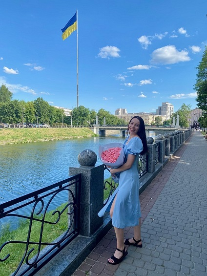

Салтовська Альона Олександрівна
- Дата народження 03.06.1994.
- Місце проживання: Харків.
- Сімейний стан: маю кота.
- Хобі: спортзал та смачно поїсти після нього.
- Ціль: успішно пройти НАЙКРАЩИЙ У ВСЕСВІТІ КУРС.
Вітаю на моїй сторінці!
Я хочу стати Frontend розробником, тому що це професія, яка дозволяє поєднувати технічні знання з творчістю.
Мені цікаво створювати інтерфейси, які не лише виглядають естетично, але й забезпечують зручність для
користувачів. Робота frontend розробника дає можливість бачити миттєвий результат своєї праці, коли код
перетворюється на реальний функціональний продукт.
Освіта
Харківський торговельно-економічний інститут КНТЕУ
Економічний факультет, Маркетинг, Магістр, з 2011 по 2017.
Досвід роботи
-
Менеджер з кредитування
- оформлення кредитів;
- консультація клієнтів;
- пошук нових клієнтів, робота з холодною базою та з лояльними клієнтами;
- формування пакету документів по кредитам;
-
Спеціаліст з планограм
- визначення асортименту торгових точок;
- розробка планограм згідно заданих умов та принципів мерчендайзингу;
- надання планограм іншим відділам та магазинам;
- обробка заявок від магазинів стосовно змін по планограмам;
- прорахунок оптимального простору, SKU при розподілі категорій на нові магазини;